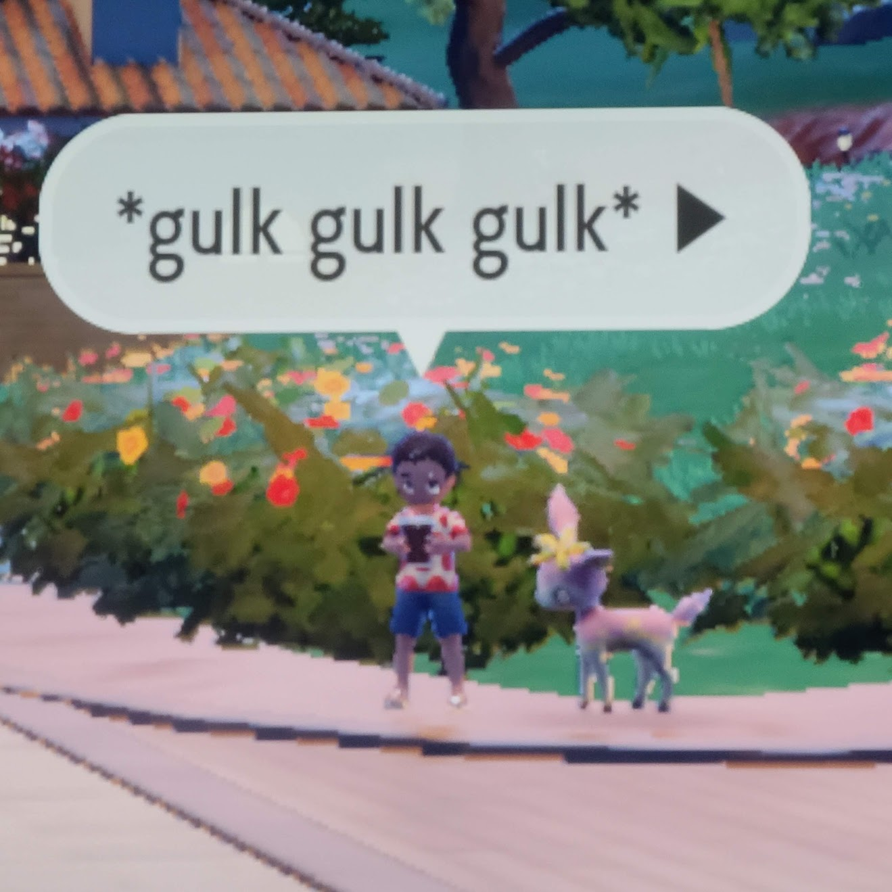
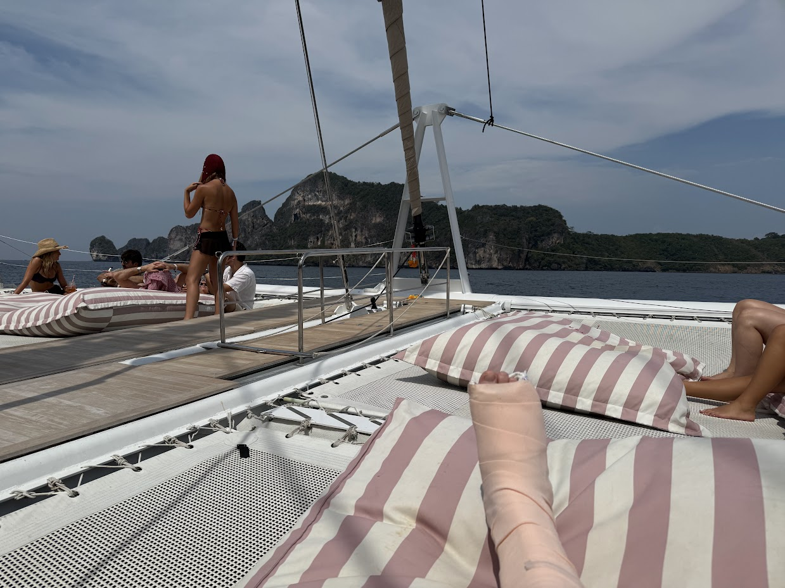

SOAPBOX (blog)
< 2025 >
i have become a coffee guy
20 July 2025|
New job/new place/new life means new coping mechanisms I guess! There's a fancy Breville espresso machine at the launchpad where I work so honestly I would be remiss *not* to develop a reliance on the stuff. Related: NPC from pokemon violet |
 |
when it rains, it pours
04 Apr 2025Life was a whirlwind there for a sec! Broke my foot, got dumped, and lost my job within a two week span. Without work, there isn't much left for me in Austin, so I flew home for a bit to see my parents. Then chopped it up with my boy in his music studio in LA. Might as well keep on keepin on.
In the meantime, I buckled down on the job hunt. Didn't expect to be back so soon, but at least with the recency of my experience I am damn good at it. And it paid off quick - on Monday I accepted an offer for a really exciting position with Blue Origin down at Cape Canaveral! Starting in just over a month, I will officially be a beneficiary of CEO entrepreneur born in 1964 Jeffrey.
So, wow, I'm moving to Florida! When I left Phoenix I felt... satisfied. Like I had seen enough of what there was to see there. In Austin however, I've barely scratched the surface! So I'm putting together a bucket list for the area - some bars downtown, the bats under Congress bridge, Czech Stop, Big Bend, you name it. I'm still in a boot for my fracture so that limits me a bit, but I'll power through.
If you have any suggestions for must-see things in Texas before I go, please send them my way! xoxo
phuket we ball
21 Feb 2025About 2 weeks ago, my bestie hmu asking if I was interested in accompanying him to a niche music festival on Phi Phi Island in Thailand. My work projects were in a good spot, and he caught me in a spontaneous mood, so...
About 1 week ago I was on a series of flights from Austin -> LAX -> Hong Kong -> Phuket. Distracted by the amenities and vistas of Hong Kong airport, we barely made it to our flight during the last call for boarders. Spent that night exploring downtown Phuket and Sirai Bay, and the next morning we hopped on our boat to our destination for the trip.
I need you to believe me when I say the name of this island was a large part of the reason I wanted to come in the first place. The music festival was help on Kho Phi Phi, or when translated and pronounced phonetically, Pee Pee Island. howm i supposed to say no to that??
First day on the island was incredibly chill - getting settled, dipping in the pool & the ocean, making friends with the bartender (ALWAYS do this). Since we had been together the whole trip thus far, my buddy and I split up for a bit after sunset. He went to rest while I found us a SCUBA instructor and explored the island.
On the outskirts of town I heard faint music coming from up the beach. Like a siren's song, if sirens are into electronic house. Okay... gotta follow it to its source. It turned out to be a huge party for Valentine's day, complete with a fire show! And one of the elements of this show was two dudes holding double dutch jump ropes- with a twist: the ropes were doused in kerosene and lit on fire. Okay... gotta try it.
It's important to note that at this point my judgment was chemically impaired. The voices of several white russians, pina coladas, and single Australian women were egging me on through every jump. Until I got a little too fancy with it, one of the ropes caught my leg and I landed on my foot horrifically. Did you know it was possible to break your foot on sand? Me neither.
At this point I'm pushing through on pure copium alone. "It's only sprained" I thought to myself while hobbling back down the beach, grunting involuntarily with every step. I made it back to my hotel room, blew up my friend's phone, and started off toward the closest clinic using the luggage holder as a walker.
My friend caught up with me and let me use him as a crutch until I could rent a pair from the clinic. From his perspective, we split up for maybe an hour and that was all it took for me to severely hurt myself. Can't take me anywhere ig.
From the clinic it was an hour-long pilgrimage to the only hospital on the island. The stray cats in there kept me company while the staff texted pictures of my X-ray to the doctor who had already gone home for the night. They were really nice, helpful in spite of the language barrier, and they gave me a lift back to the resort in their ambulance golf cart!
So, tragically, the SCUBA and hiking plans I had put together for the trip were off the table. But! I didn't let it stop me from havin a good time. The next day was an all day party on a house boat around the archipelago, and you already know I hopped aboard one-footed. The cast was a huge hit on the dance floor.

I tried to include my foot in every picture I took on the trip, and now my photo album captures me chronologically accruing cast signatures from every bloke and sheila on the island.
The rest of the trip was an absolute blast, and I reckon I'm gonna have to go back next year since my plans were so rudely interrupted by the frailty of the human body.
Got the wheelchair celebrity treatment through the airports all the way back to Austin. And it almost made us miss our flight in Hong Kong (final boarding call, AGAIN) had we not been helped by a badass woman who worked for the airport.
This whole experience gave me a ton of empathy for old people who lose the ability to drive, walk, etc. and bristle against being helped. It's not exactly fun suddenly becoming dependent on other people for things you used to be able to do yourself. But it also gave me a lot of faith in in my peers and in the systems we have for the handicapped. So many kind folks have helped me out thus far, and they ALWAYS deliver. There's a lot of wonderful people in this world.
10/10, would break my foot on peepee island again
is this thing on
01 Feb 2025social media is dead

long live the blog